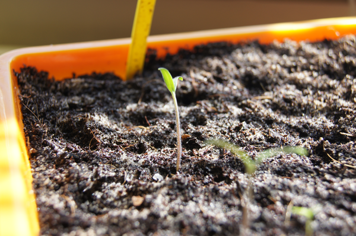

Moestuin
Last update on 17:29 PM April 06, 2015,
Browse this page's history
Updated every once in a while.
In the beginning…
Some photos of the plants in their young stage, approximately 2 weeks since sowing the seeds. The peppers came out last.
Pepper plant, two days after first glimpse.
Eggplant

The courgettes grew quite fast. Note the roots.

These are “Cœur de Bœuf” tomatos.
The basil forest.
Replanting
The courgette started getting too big, so we replanted them into bigger pots. It was a sunny day, but still a bit cold.
Replanting in process.
RIP in peace courgette.
Nooo!! It was a bit too cold outside for this one. Let’s hold it up with some sticks…
There, all better… :(
It needs a day to recover.